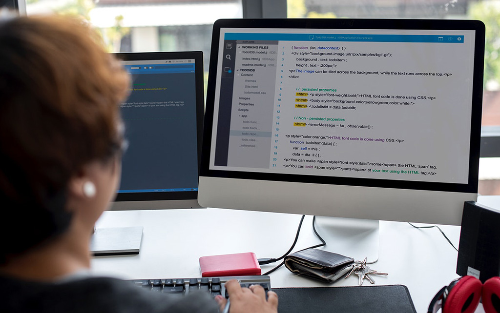

Digital publications
Digital publishing is evolving rapidly. This manual attempts to cover the basics, but even these are likely to be overtaken sooner or later by new approaches.
Types of digital publications
Portable formats
Disks, CD-ROMs, videos and other portable forms of electronic publications need to be distributed physically but are designed to be viewed on screen.
Digitally delivered publications
Accessed via the Internet or an intranet, publications of this kind can be designed either:
- for viewing on screen and printing out if the user wishes or
- specifically for use on screen rather than for reading on paper.
In this manual, screen-based publication means material that is designed primarily for use on screen (whether delivered electronically or in a portable format) and that exploits the distinguishing characteristics of the medium. Material designed for print and merely digitised for electronic delivery does not come within this definition.
Back to contents ^Preparing digital publications
Readers’ expectations
Readers expect that on-screen publications will use the medium’s capabilities wherever relevant—which may include, for example, interactivity, electronic links and animation. They also expect material on a web site to be kept up to date.
Screen characteristics
The size, shape and other characteristics of screens must be considered. For instance, the horizontal configuration of most current desktop screens does not suit the vertical design of most printed material, and most users will not be able to see all of a traditional A4 page on screen without scrolling. Reading on screen can also be more tiring than reading printed text because of the screen’s emitted light, flickering and pixelation.
Structuring, writing and designing digital publications
These activities require an understanding of the differences in reading patterns for printed and on-screen material. For example, users of on-screen material tend to skim rather than to read closely; because of electronic links, they may not read the material sequentially; and their eye movement patterns differ from those employed for reading paper-based publications, with a greater focus on the central part of the screen.
Screenbased material is also best divided into small, independent units linked logically to associated material . The conceptual design, organisation and linking of screenbased material—often referred to as ‘information architecture’—thus needs to be undertaken in an integrated manner.
Back to contents ^Legal compliance and standards
The Commonwealth’s requirements for online publishing are discussed in the publishing section of this manual. Among the matters that need to be taken into account are copyright; equity of access; metadata standards; international identification and cataloguing systems; publication lodgment; and legislative provisions relating to privacy, defamation, contempt, trademarks and trade practices. Details of compliance requirements for Commonwealth online publications can be found in the Content Guide.
Checklist

Screen readers
Screen readers are an assistive technology that helps users who are blind, visually impaired or have reading difficulties.
People use screen readers to navigate and understand web pages through a combination of:
- reading the content of the web page in a linear order
- moving around the page through headings, links and form elements
Compliance
All agencies must comply with the Web Content Accessibility Guidelines 2.0 (WCAG 2.0) outlines ways to make digital content accessible to the broadest population.
The Australian Government Digital Service Standard requires conformance to WCAG 2.0 level AA, which includes level A. There are 38 criteria that apply at level AA, plus some from level AAA we recommend.
Content authors are primarily responsible for 17 criteria.
More resources
Guidance on how to improve PDF accessibitliy from W3C.
Accessibility for Adobe AcrobatGuidance on how to improve PDF accessibitliy from Adobe.
Co-created by
Last updated
Department of the Prime Minister and Cabinet
May 2018